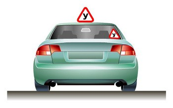

Первоначальное обучение вождению транспортных средств должно проводиться на закрытых площадках или автодромах.
Учебная езда на дорогах допускается только с обучающим и при наличии первоначальных навыков управления у обучаемого. Обучаемый обязан знать и выполнять требования Правил.
Обучаемому на автомобиле должно быть не менее 16 лет, а на мотоцикле — не менее 14 лет.
Механическое транспортное средство, на котором проводится обучение, должно быть оборудовано в соответствии с пунктом 5 Основных положений и иметь опознавательные знаки “Учебное транспортное средство”.

Запрещается учебная езда на дорогах, перечень которых объявляется в установленном порядке.